Hướng dẫn sử dụng trang quản trị – Luật Sư Nam
Mọi việc sửa nội dung làm tại willmichco.github.io/luatsunam/admin, không cần biết code, không cần vào GitHub. Bấm Lưu → website tự cập nhật sau 1–3 phút. Nhập sai → website giữ nguyên bản cũ, quản trị nhận email báo lỗi. Trong trang quản trị luôn có nút ? Hướng dẫn ở góc dưới bên trái để mở lại trang này.
Luôn bấm Lưu trước khi rời khung soạn thảo. Trang quản trị không tự lưu bản đang soạn. Nếu bấm Esc, nút ← hoặc đóng tab khi còn thay đổi chưa lưu, trang sẽ hỏi lại. Bài dài nên soạn trong Word/Google Docs rồi dán vào, và bấm Lưu mỗi 10 phút (bài vẫn là nháp nên chưa lên site).
1. Đăng nhập
Biên tập viên: bấm Đăng nhập bằng GitHub (1). Lần đầu GitHub hỏi cấp quyền: bấm Authorize. Chưa có tài khoản: xem mục 10.
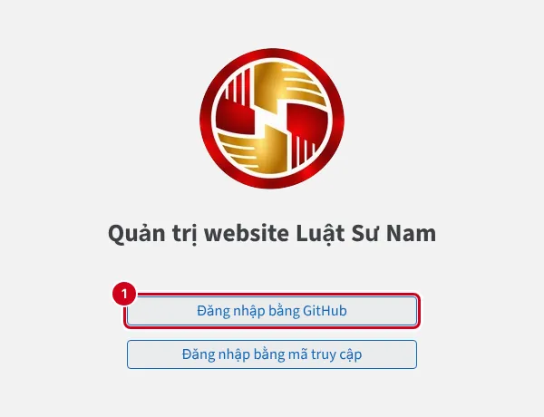
Quản trị, trong lúc chưa cài Worker đăng nhập: dùng mã truy cập (tạo 1 lần, khoảng 3 phút):
- github.com → ảnh đại diện → Settings → Developer settings → Personal access tokens → Fine-grained tokens → Generate new token.
- Token name
CMS Luật Sư Nam· Expiration 90 ngày · Repository access Only select repositories →luatsunam· Permissions → Repository permissions → Contents: Read and write → Generate token → chép mã (bắt đầu bằnggithub_pat_). - Mở /admin → Đăng nhập bằng mã truy cập (1) → dán mã (2) → Đăng nhập (3).
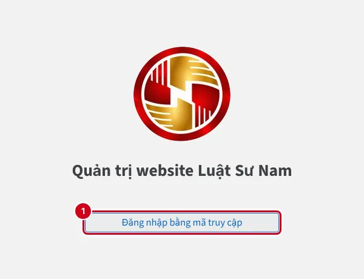
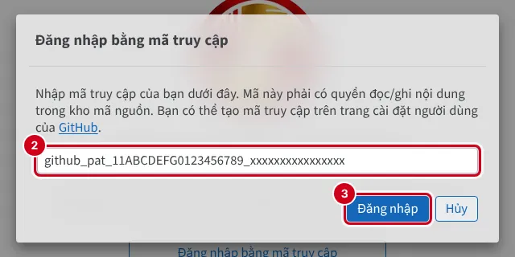
Mã truy cập như chìa khóa văn phòng: không gửi qua Zalo/email, không lưu trên máy công cộng (dùng xong: ảnh đại diện góc phải trên → Đăng xuất). Hết hạn thì tạo mã mới.
2. Đăng bài
Khoảng 15 phút, chưa tính thời gian luật sư duyệt.
-
Bài viết → Tạo mới (1).
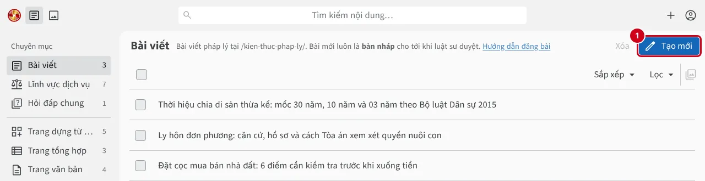
-
Điền Tiêu đề (1) và Đường dẫn (2): 2–8 từ khóa không dấu nối bằng gạch ngang, ví dụ
hop-dong-dat-coc-mua-nha. Đường dẫn không đổi được sau khi lưu. Giữ nguyên Bản nháp (3). Chọn Lĩnh vực chính (4).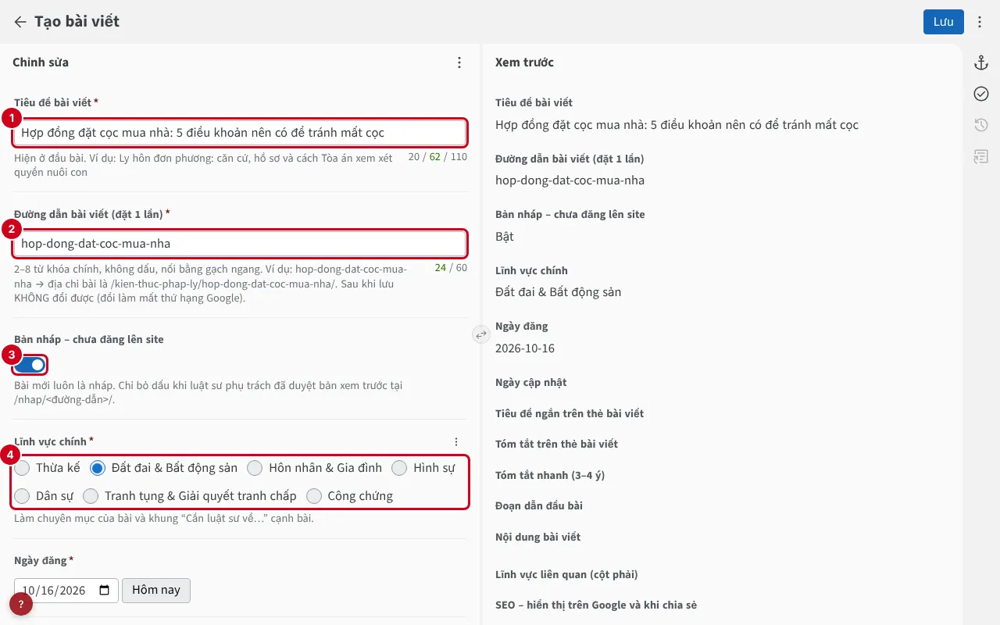
-
Điền Tóm tắt trên thẻ, 3–4 ý Tóm tắt nhanh (bấm + Thêm ý), Đoạn dẫn đầu bài.
-
Nội dung bài viết: dán thân bài. Nút ¶ (1) → Tiêu đề 2 cho mục chính (tự vào mục lục), Tiêu đề 3 cho mục nhỏ, Trích dẫn = hộp lưu ý. Nút Chèn (2) → Ảnh hoặc Bảng.
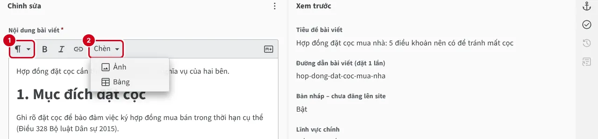
-
Ảnh: trong khung ảnh bấm Duyệt tệp → Tải lên (1) → chọn ảnh trong máy (≤ 5 MB, tự đổi sang WebP) → Chèn.
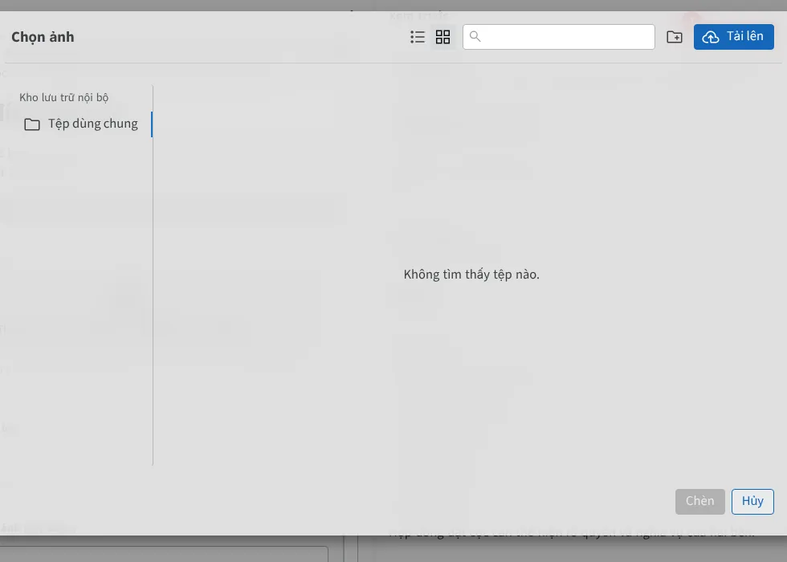
Điền Mô tả ảnh (1) – bắt buộc, thiếu thì không lưu được – và Chú thích dưới ảnh (2) nếu cần.
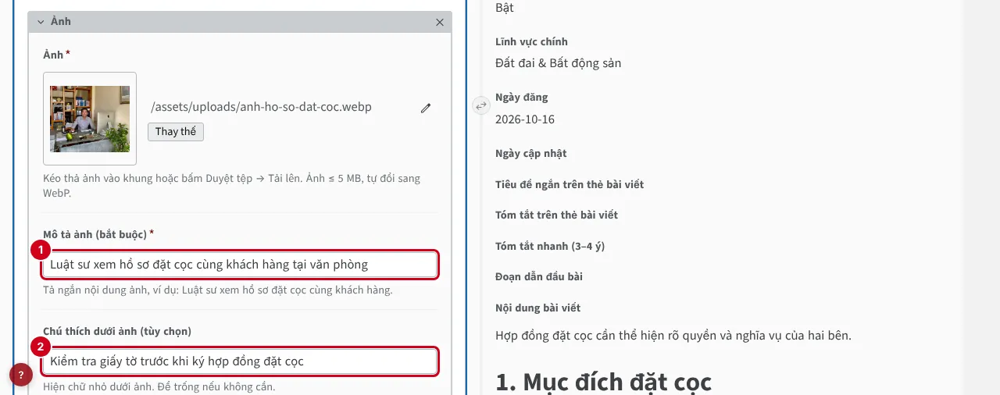
-
SEO: Tiêu đề trên Google (1) 15–60 ký tự, Mô tả trên Google (2) 70–160 ký tự – bộ đếm hiện số ký tự, xanh là đạt. Bấm Lưu (3).
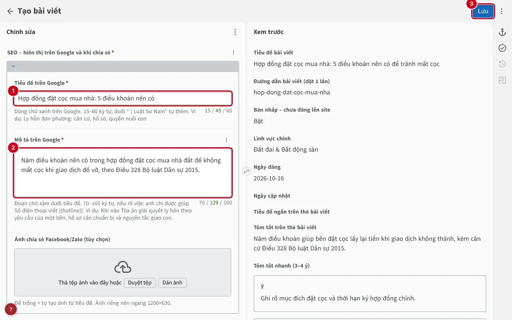
-
Bài đã lưu hiện trong danh sách kèm chữ BẢN NHÁP – chưa lên site.
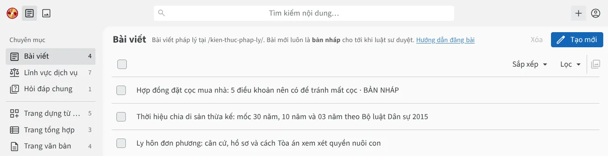
-
Gửi luật sư phụ trách link xem trước
/nhap/<đường-dẫn>/(trên bản thử Cloudflare, khi đã cài). Luật sư duyệt → bỏ dấu Bản nháp → Lưu → bài lên site sau 1–3 phút. -
Mở bài trên site kiểm tra, cả trên điện thoại; Google Search Console → Kiểm tra URL → Yêu cầu lập chỉ mục.
Bảng: Chèn → Bảng; mỗi dòng một hàng, các ô cách nhau dấu
|, dòng đầu là tiêu đề cột. Liên kết trong site: bôi đen chữ → nút liên kết → dán/dich-vu/thua-ke/.
3. Thêm khối
Thêm, xóa, đổi thứ tự, tạm ẩn các phần (section) của một trang – khoảng 5 phút.
-
Trang dựng từ khối → chọn trang (ví dụ Trang chủ) → mục Các khối trên trang.
-
Giữ chuột vào ═ (1) rồi kéo để đổi thứ tự. × (2) để xóa khối. Thêm khối (3) → chọn loại khối → điền nội dung.
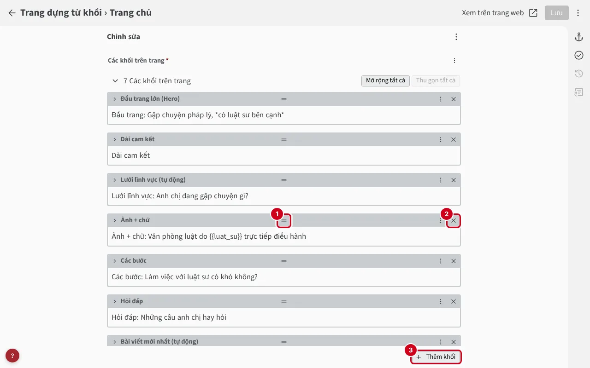
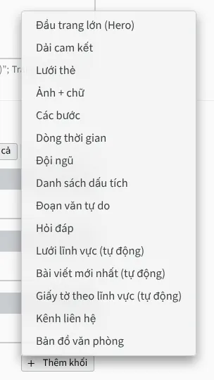
15 loại khối có sẵn -
Muốn tạm ẩn, đừng xóa: bấm vào khối để mở → tắt Hiển thị khối này (1).
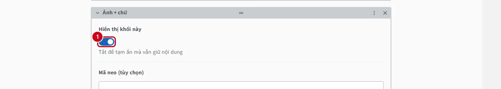
-
Lưu → kiểm tra trên site sau 1–3 phút, cả trên điện thoại.
Lỡ xóa hoặc sửa nhầm (chưa lưu): nút ⋮ góc phải trên → Hoàn tác tất cả thay đổi. Đã lưu rồi: báo quản trị (mọi lần lưu đều có lịch sử, lấy lại được).
4. Tạo trang
Khoảng 20 phút.
-
Trang dựng từ khối → Tạo mới → Tên trang (1), giữ Bản nháp (2), Nằm trong mục (3) nếu là trang con, Tiêu đề lớn của trang (4).
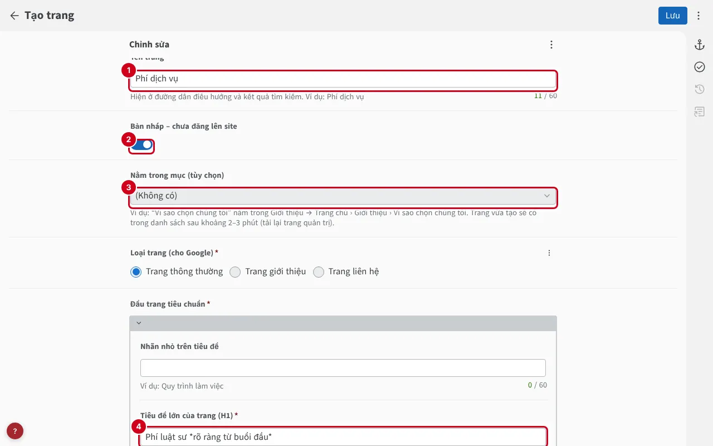
-
Thêm khối như mục 3 – thường dùng Đoạn văn tự do, Lưới thẻ, Hỏi đáp. Khối liên hệ đỏ cuối trang có sẵn.
-
Điền SEO → Lưu. Duyệt xong → bỏ dấu Bản nháp → Lưu.
-
Đưa lên menu: chờ 2–3 phút cho website build xong, tải lại trang quản trị (F5) để trang mới có trong danh sách chọn. Cài đặt → Menu và chân trang → mở mục cha (ví dụ Giới thiệu ▾) → Thêm mục con (1) → điền Chữ (2) → chọn Trang (3) → Lưu.
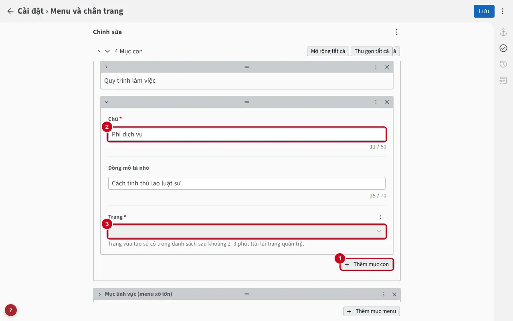
5. Đổi hotline
Cài đặt → Thông tin công ty → sửa Hotline (1) → Lưu. Tự cập nhật trên mọi trang: nút Gọi, nút Zalo, chân trang, bản đồ, mô tả trên Google, dữ liệu cho Google.
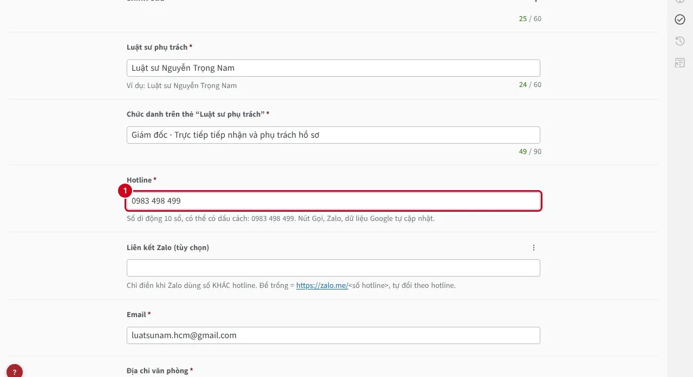
- Ô Liên kết Zalo để trống thì Zalo tự theo hotline; chỉ điền khi Zalo dùng số khác.
- Trong mọi ô chữ, viết mã
{{hotline}},{{email}},{{luat_su}},{{dia_chi}},{{gio_lam_viec}}thay vì gõ số hoặc tên. Gõ thẳng số hotline/email: build báo lỗi và chỉ đúng ô cần sửa.
6. Chuyển hướng
Dùng khi phải đổi đường dẫn của trang/bài đã đăng (hiếm khi cần, vì làm mất thứ hạng tạm thời).
-
Tạo trang/bài mới với đường dẫn mới, chép nội dung sang, đăng.
-
Cài đặt → Chuyển hướng 301 → Thêm chuyển hướng → Đường dẫn cũ (1) dạng
/duong-dan-cu/→ Chuyển tới (2) dạng/duong-dan-moi/→ Lưu.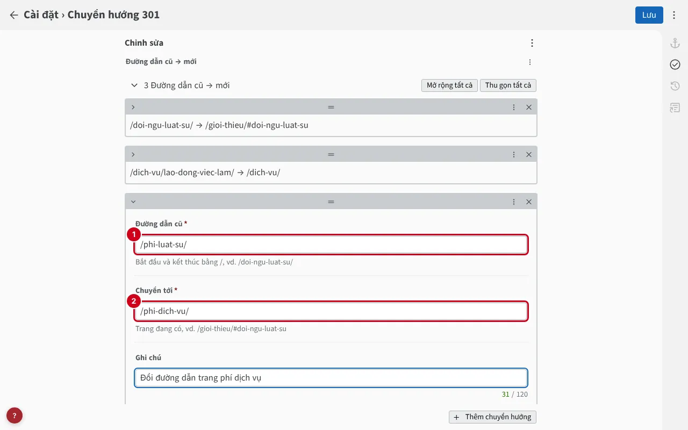
-
Xóa trang/bài cũ → Lưu. Build tự kiểm: đích phải có thật, không vòng lặp.
7. Khi build lỗi
Dấu hiệu: đã bấm Lưu 5 phút mà website chưa đổi.
-
Biên tập viên: không cần lo – website vẫn chạy bản cũ. Báo quản trị tên trang/bài vừa sửa.
-
Quản trị: mở email Build website lỗi – site vẫn giữ bản cũ (issue trên GitHub). Mỗi dòng ghi tệp + tên trường đúng như trong trang quản trị, ví dụ:
content/hoi-dap.yml - Câu hỏi 1 › Câu trả lời: Đang ghi thẳng số hotline “0983.498.499”. Thay bằng mã {{hotline}} …Mở đúng mục đó trong /admin → sửa → Lưu. Build lại thành công thì issue tự đóng. Không hiểu lỗi: chụp màn hình gửi Claude.
-
Bản nháp có lỗi không chặn website chính thức. Lỗi của bản nháp hiện ở phần cảnh báo của lượt build (GitHub → Actions) và phải sửa trước khi bỏ dấu nháp.
8. Quy tắc nội dung pháp lý
- Bài hoặc câu trả lời có dẫn điều luật phải được luật sư duyệt trước khi bỏ dấu nháp.
- Không hứa hẹn kết quả (Quy tắc 9.1.6 Bộ Quy tắc Đạo đức và Ứng xử nghề nghiệp luật sư Việt Nam).
- Mỗi quý: rà ngày cập nhật và hiệu lực văn bản pháp luật trong bài cũ; cập nhật Ngày cập nhật.
9. Mời biên tập viên
Việc của quản trị, khoảng 5 phút mỗi người.
- Người được mời tạo tài khoản GitHub và bật xác thực 2 lớp (mục 10), rồi gửi tên tài khoản cho quản trị.
- Quản trị: github.com/willmichco/luatsunam/settings/access → Add people → nhập tên tài khoản → Add to repository (cộng tác viên của kho cá nhân có quyền ghi).
- Người được mời mở email invited you to collaborate → Accept invitation → vào /admin → Đăng nhập bằng GitHub.
Người nghỉ việc: cùng trang đó → Remove, ngay trong ngày.
10. Tạo tài khoản GitHub
3 bước, dành cho biên tập viên.
- Mở github.com/signup → nhập email công việc, mật khẩu, tên tài khoản (ví dụ
nguyenvana-lsn) → nhập mã xác minh gửi qua email. - Bật xác thực 2 lớp: ảnh đại diện → Settings → Password and authentication → Enable two-factor authentication → quét mã QR bằng ứng dụng xác thực (Google Authenticator, Microsoft Authenticator…) → lưu mã khôi phục ở nơi an toàn.
- Gửi tên tài khoản cho quản trị → mở email mời → Accept invitation → vào /admin → Đăng nhập bằng GitHub.